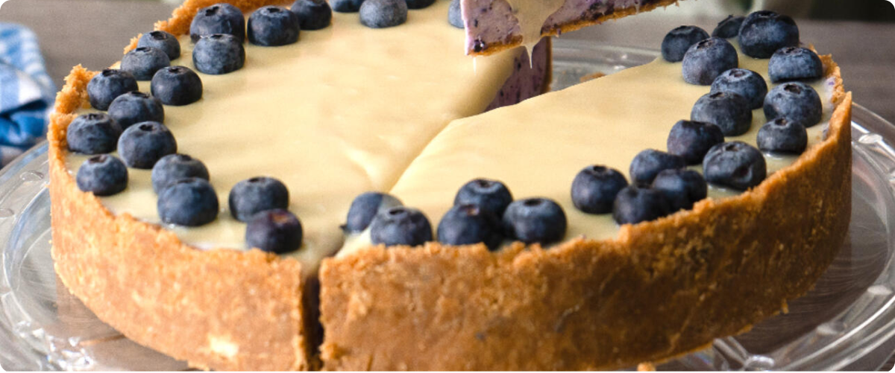

Нью-Йоркский чизкейк
Ингредиенты
Для основы:
- 200 г песочного печенья
- 100 г сливочного масла
Для начинки:
- 900 г сливочного сыра
- 200 г сахара
- 3 яйца + 1 желток
- 200 мл сливок 33%
- 2 ч.л. ванильного экстракта
Пошаговый рецепт
1
Разогрейте духовку до 160°C. Измельчите печенье в крошку, смешайте с растопленным маслом. Утрамбуйте в форму диаметром 23 см, запекайте 10 минут.
2
Взбейте сыр с сахаром до кремообразной массы. Добавляйте по одному яйцу, затем желток. Влейте сливки и ваниль, перемешайте до гладкости.
3
Вылейте начинку на основу. Выпекайте 1 час на водяной бане. Оставьте в выключенной духовке на 1 час, затем охлаждайте 4 часа в холодильнике.
👨🍾 Советы шефа:
- Все ингредиенты должны быть комнатной температуры
- Используйте форму со съемным дном
- Для идеальной текстуры не перебивайте тесто